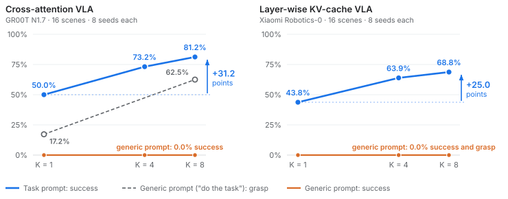
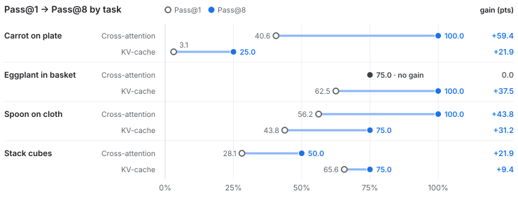
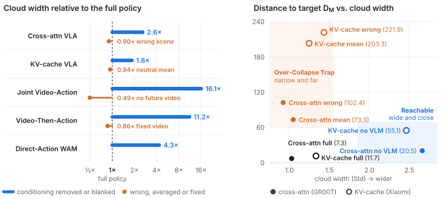
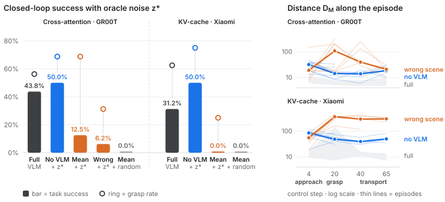
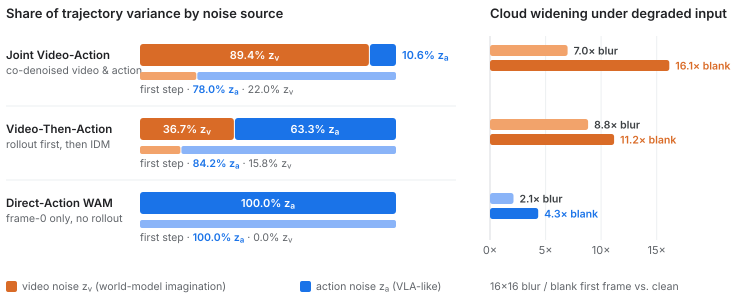
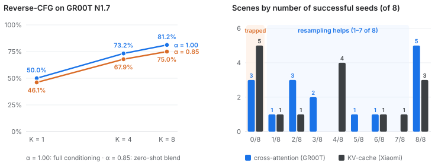

TL;DR核心摘要
Mostly, they select a behavior the action head already knows. They rarely create it.
大多数时候，它们是在动作头已有的技能库里做选择，而不是凭空创造动作。
- Skill lives in the head. Resampling noise lifts Pass@1 to Pass@8 by 25–31 points across two VLAs.
- Conditioning contracts rather than builds. Removing it widens clouds 1.8–16.1×, while wrong conditioning traps the policy off-mode.
- VLM-free heads match full VLAs. With oracle on-shell noise, both reach 50.0% success (full VLAs hit 43.8% and 31.2%).
- Coupling sets world-model variance. Joint Video-Action puts 89.4% of variance in video noise, while Direct-Action WAM puts 100% in action noise.
- 运动技能本来就在动作头里。仅重采样初始噪声，就能把两类 VLA 的 Pass@1 到 Pass@8 拉升 25 到 31 个百分点。
- 条件的作用是收缩而非构造。去掉条件会让动作云拓宽 1.8 到 16.1 倍，而错误条件会把策略锁死在错误模态上。
- 无 VLM 也能追平完整策略。只要给定壳层上的最优噪声，去掉 VLM 的动作头在两类 VLA 上都能达到 50.0% 成功率（完整基线为 43.8% 和 31.2%）。
- 耦合程度决定世界模型的方差归属。Joint Video-Action 把 89.4% 的轨迹方差留在视频噪声里，而 Direct-Action WAM 把 100% 留在动作噪声里。
Schematic · flow matching from noise (t = 1) to action (t = 0) 示意图 · 流匹配从噪声 (t = 1) 演化到动作 (t = 0)
Three ways conditioning shapes a flow action head 条件信号塑造流匹配动作头的三种方式
Full VLM完整 VLM
Tight cloud on the target紧致聚焦在目标动作上
43.8% success
Wrong / averaged VLM错误或均值 VLM
Equally tight in the wrong place同样紧致却锁死在错误位置
6.2% success
No VLM (c = 0)去掉 VLM (c = 0)
Wide prior still covers the target变宽的先验依然覆盖目标动作
50.0% success with z*
Cross-attention VLA (GR00T N1.7). The wrong panel uses VLM tokens from a different scene. Cloud widths follow the measured width ratios, the wrong cloud's offset grows with $\log D_M$, and $a^\star$ sits at the same spot in every panel. Success is measured on SimplerEnv WidowX over 16 episodes per condition (8 for KV-cache oracle runs). 动作云宽度按实测比例缩放，错误云团的偏移量随 $\log D_M$ 增大，且三幅图中的目标动作 $a^\star$ 位于同一位置。成功率测自 SimplerEnv WidowX 每组 16 条轨迹（KV 缓存预言机实验为 8 条）。
1 · The puzzle1 · 反直觉起点
Noise alone buys 25–31 points of success 只换随机噪声，就能白赚 25 到 31 个百分点的成功率
Take a generalist robot policy and freeze the weights, the camera image, and the language instruction. Change only the Gaussian noise $z \sim \mathcal{N}(0, I)$ that the flow action head starts from. Roll out $K = 8$ seeds in closed loop on 16 SimplerEnv WidowX scenes, and count a scene as solved if any seed succeeds (Pass@K).
拿一个通用的机器人策略，把模型权重、相机图像和语言指令全部冻住，只改动流匹配动作头起点的那一份高斯噪声 $z \sim \mathcal{N}(0, I)$。在 SimplerEnv WidowX 的 16 个场景里，每个场景闭环跑 $K = 8$ 个随机种子，只要有任意一个种子完成任务，就记作该场景通过（Pass@K）。
A cross-attention VLA (GR00T N1.7) goes from 50.0% at Pass@1 to 81.2% at Pass@8. A layer-wise KV-cache VLA (Xiaomi Robotics-0, $\pi_0$-style) goes from 43.8% to 68.8%. With the model, scene, and instruction held fixed, a random seed decides whether the robot succeeds or fails.
交叉注意力 VLA（GR00T N1.7）的成功率从 Pass@1 的 50.0% 跃升到 Pass@8 的 81.2%。逐层 KV 缓存 VLA（Xiaomi Robotics-0，$\pi_0$ 风格）也从 43.8% 涨到 68.8%。同一个模型、同一张画面、同一句指令，决定成败的竟然是一颗随机种子。
Figure 1 · Pass@K on SimplerEnv WidowX 图 1 · SimplerEnv WidowX 上的 Pass@K 曲线
More noise seeds solve more scenes, while removing the task instruction drops success to zero.
噪声种子越多，解出的场景越多，而去掉具体任务指令后成功率直接归零。


If the seed decides the outcome, the motor skill must already live inside the action head. That raises a direct question.
如果随机种子就能决定成败，说明完成任务的运动技能早就住在动作头里面了。一个很直接的问题随之浮现。
What is the multi-billion-parameter VLM, or video world model, actually contributing? 那么，几十亿参数的 VLM 或视频世界模型，究竟贡献了什么？
2 · Framing2 · 问题框架
Mode selection and vector-field synthesis make opposite predictions “模态选择”与“向量场构造”给出了截然相反的预测
Write the action head as $a = f_\theta(z;\, c)$, where $z$ is noise and $c$ is the conditioning from the VLM or world model. Two clean hypotheses explain what $c$ might do.
把动作头写成 $a = f_\theta(z;\, c)$，其中 $z$ 是初始噪声，$c$ 是来自 VLM 或世界模型的条件信号。关于 $c$ 的作用，存在两种清晰对立的假说。
Hypothesis A假说 A
Mode selection模态选择
The head already stores a wide, multi-task motor prior, and $c$ narrows it onto the right region.
动作头内部已经存好了宽广的多任务运动先验，而条件 $c$ 只是把它收窄到正确区域。
If we remove $c$ the action cloud widens, and the target stays reachable by some noise.
如果去掉 $c$ 动作云会变宽，目标动作依然能被某个噪声命中。
Hypothesis B假说 B
Vector-field synthesis向量场构造
Conditioning $c$ builds the action, so without it the head has no notion of the target behavior.
条件 $c$ 负责动态拼出动作向量场，没了它，动作头根本不知道目标行为是什么。
If we remove $c$ no noise can reproduce the target action.
如果去掉 $c$ 无论怎么选噪声，都复现不出目标动作。
The test follows directly. Let $a^\star = f_\theta(z_{\text{ref}};\, c_{\text{true}})$ be what the full policy does. Remove or corrupt $c$, then ask whether there is still a noise $z$ that produces $a^\star$.
检验方法顺理成章。记 $a^\star = f_\theta(z_{\text{ref}};\, c_{\text{true}})$ 为完整策略给出的动作，然后把 $c$ 拿掉或替换成错误条件，直接追问一个问题，即是否还存在某个正常噪声 $z$ 能够生成 $a^\star$。
3 · Setup3 · 实验设置
Conditioning enters one noise channel in VLAs and two in world models VLA 只有一个噪声通道，而世界模型打开了第二个通道
One checkpoint cannot separate conditioning from architecture. We therefore probe five flow-matching paradigms arranged along one structural axis, ordered by how tightly the foundation backbone couples to the action head.
单看一个权重无法把条件机制和架构特性剥离开来。因此我们沿着同一条结构轴线考察五类流匹配范式，按照大模型主干与动作头的耦合紧密程度依次排开。
Two canonical VLA paradigms (one noise channel $z_a$). Continuous flow VLAs split into two dominant designs. Cross-Attention VLAs (GR00T-family, represented by GR00T N1.7) encode image and text once into a conditioning sequence $H$, and a decoupled action DiT reads $H$ only through cross-attention. Layer-wise KV-Cache VLAs ($\pi_0$ and MoT-family, represented by Xiaomi Robotics-0) fuse the action expert into every transformer layer, sharing joint self-attention with all 36 layers of VLM keys and values.
两类主流 VLA 范式（单一动作噪声通道 $z_a$）。连续流匹配 VLA 主要分为两种架构。Cross-Attention VLA（以 GR00T 系列为代表，实测 GR00T N1.7）先用 VLM 把图文编码为一层条件序列 $H$，再由独立的动作 DiT 通过交叉注意力读取 $H$。Layer-wise KV-Cache VLA（以 $\pi_0$ 与 MoT 系列为代表，实测 Xiaomi Robotics-0）则把动作专家嵌入每一层 Transformer，在全部 36 层中与 VLM 的键值对做联合自注意力。
Three canonical WAM paradigms (two noise channels $z_v, z_a$). World action models add a video noise channel $z_v$ for future frames, evaluated across three OpenWAM 5B variants on RoboTwin 2.0 along the same coupling axis. Joint Video-Action WAMs (UVA and Motus-style, OpenWAM mutual-joint) co-denoise future video and actions together in shared attention. Video-Then-Action WAMs (UniSim and DreamGen-style, OpenWAM two-stage IDM) generate a full future video rollout first and then decode actions with an inverse dynamics model. Direct-Action WAMs (FastWAM and VPP-style, OpenWAM isolated) keep video modeling during pretraining, yet skip future video generation at inference and read only the current frame $o_0$.
三类主流 WAM 范式（视频与动作双噪声通道 $z_v, z_a$）。世界动作模型引入了预测未来画面的视频噪声 $z_v$，我们在 RoboTwin 2.0 上沿着同一条耦合轴对比 OpenWAM 5B 的三种实现。Joint Video-Action WAM（UVA / Motus 风格，对应 OpenWAM mutual-joint）在共享注意力中同步对未来视频和动作去噪。Video-Then-Action WAM（UniSim / DreamGen 风格，对应 OpenWAM two-stage IDM）先完整生成一段未来视频，再用逆动力学模型单向译出动作。Direct-Action WAM（FastWAM / VPP 风格，对应 OpenWAM isolated）在预训练阶段保留视频建模，但推理时跳过未来视频生成，只读当前帧 $o_0$。
Figure 2 · How conditioning and noise enter each paradigm 图 2 · 条件信号与噪声如何进入五类策略范式
VLAs carry all variance in one action noise channel, while WAMs split trajectory variance between video and action noise according to coupling depth.
VLA 将全部方差集中在单一动作噪声通道中，而 WAM 按视频与动作的耦合深度在双噪声通道之间切分轨迹方差。
Hover or click any panel to inspect its attention coupling and variance split.
Four diagnostics that separate the hypotheses 区分两种假说的四个诊断指标
- Cloud width
- Spread of actions over many noise draws (Std), relative to the full policy. Wider means more behaviors are on offer.
- Distance $D_M$
- Mahalanobis distance from the target $a^\star$ to the cloud, in units of the cloud's own spread. Low means the target sits inside the cloud.
- Reach error
- Smallest error to $a^\star$ found by optimizing the 56 active noise coordinates, over the whole action chunk (Ch) or the first step (S0).
- Success / Grasp
- Closed-loop task success rate (SR) and grasp rate in simulation.
- 动作云宽度
- 多次重采样噪声得到的动作标准差（Std），相对于完整策略的倍数。越宽代表可供选择的行为越多。
- 马氏距离 $D_M$
- 目标动作 $a^\star$ 到动作云中心的马氏距离，以动作云自身展宽为单位。数值越低说明目标越靠近云团内部。
- 可达误差
- 仅优化 56 个有效噪声坐标所能逼近 $a^\star$ 的最小误差，分别衡量整段动作块（Ch）与第一步动作（S0）。
- 成功率 / 抓取率
- 仿真环境中的闭环任务成功率（SR）与物体抓取率。
Across all figures, blue marks wide priors, reachable targets, and action noise $z_a$, while orange marks collapsed traps, misleading conditioning, and video noise $z_v$. Neutral grey marks full-policy baselines.
全文配色保持一致，蓝色代表变宽的先验、可达目标与动作噪声 $z_a$，橙色代表坍缩陷阱、误导性条件与视频噪声 $z_v$，中性灰色代表完整策略基线。
We optimize only the 56 active noise coordinates (8 steps × 7 DoF), freeze every padding dimension to a fixed Gaussian draw, and keep the noise on the typical Gaussian shell ($\|z_{56}\|_2 \le 1.15\sqrt{56}$, $|z_i| \le 3$). The optimized noise therefore looks like an ordinary sample.
我们只允许优化 56 个真实有效的噪声维度（8 步 × 7 自由度），把所有多机型填充维度锁死在固定高斯抽样上，并将优化后的噪声投影回典型高斯球壳（$\|z_{56}\|_2 \le 1.15\sqrt{56}$ 且 $|z_i| \le 3$），保证找出来的噪声看起来就是一次普通抽样。
Why not just sample, or invert freely?为什么不直接随机采样，或者放开所有维度反演？
Random sampling gives false negatives. In 56 dimensions, Gaussian samples concentrate on a thin shell of radius $\approx\sqrt{56}$. If removing the VLM widens the cloud 3× along 8 behavioral directions, a random draw lands within one native radius of $a^\star$ with probability $\sim 3^{-8} \approx 1.5 \times 10^{-4}$. Even 1,024 blind draws routinely miss a target that sits inside the support.
Unconstrained inversion gives false positives. Generalist heads pad actions for multi-robot use. GR00T integrates $40 \times 132 = 5{,}280$ dimensions and Xiaomi integrates $8 \times 32 = 256$, of which only 56 are active. Optimizing unused dimensions or leaving the Gaussian shell can smuggle information through padding channels, so freezing 5,224 (GR00T) and 200 (Xiaomi) padding dimensions prevents that artifact.
盲目随机采样会带来假阴性。在 56 维空间里，高斯样本集中在半径约 $\sqrt{56}$ 的薄壳上。只要去掉 VLM 后动作云沿着 8 个行为方向各拓宽 3 倍，单次随机抽样落进 $a^\star$ 原生半径内的概率就会降到 $3^{-8} \approx 1.5 \times 10^{-4}$。哪怕目标就在支撑集里，盲抽 1,024 次也常常擦肩而过。
无约束反演则会带来假阳性。通用策略为了兼容不同构型的机械臂做了大量零填充，GR00T 积分 $40 \times 132 = 5{,}280$ 维，Xiaomi 积分 $8 \times 32 = 256$ 维，其中真正生效的只有 56 维。如果放任优化器修改多余填充维或冲出高斯球壳，信息就会经由废通道偷渡，因此锁死 GR00T 的 5,224 维和 Xiaomi 的 200 维填充通道是必要前提。
4 · Finding 14 · 发现一
Removing the VLM widens the prior while a wrong VLM traps it 去掉 VLM 会把先验变宽，喂入错误的 VLM 反而把策略锁死
An absent VLM leaves the target reachable inside a wide cloud, while a wrong VLM squeezes it out.
没有 VLM 时，目标动作仍安稳地落在宽广的动作云里，而错误的 VLM 会把它硬生生挤出支撑集。
Intuition says less VLM signal means worse reachability, with no VLM at the bottom. The opposite happens.
直觉会告诉我们，VLM 信号越弱，动作可达性就越差，彻底去掉 VLM 应该垫底。但实验结果恰恰相反。
In the Cross-Attention VLA (GR00T N1.7), removing the VLM tokens widens the action cloud 2.6× while keeping 78.9% subspace overlap with the full policy. The target stays close ($D_M = 20.5$), and the chunk reach error remains below half the full policy's own cloud radius (Table 1).
在 Cross-Attention VLA（GR00T N1.7）中，拿掉 VLM token 后，动作云拓宽了 2.6 倍，同时与完整策略保持 78.9% 的子空间重叠。目标动作依然离云团很近（$D_M = 20.5$），整段动作块的可达误差不到完整策略自身半径的一半（表 1）。
Now feed a confident but wrong scene. The cloud refuses to widen (0.9×) and instead contracts around the wrong behavior. Distance jumps five-fold to $D_M = 102.4$, and reach error more than triples. We call this the Over-Collapse Trap.
现在换成一个自信却错误的场景条件。动作云不仅拒绝变宽（仅 0.9 倍），反而紧紧收缩到错误行为周围，马氏距离暴涨五倍到 $D_M = 102.4$，可达误差翻了三倍多。我们把这种现象称为过度坍缩陷阱（Over-Collapse Trap）。
Figure 3 · Prior inflation and the Over-Collapse Trap 图 3 · 先验膨胀与过度坍缩陷阱
Removing conditioning widens the cloud across all five paradigms, while wrong or averaged conditioning keeps it narrow and deep KV-cache coupling amplifies the trap.
去掉条件会在全部五类范式中把动作云变宽，而错误或均值条件会死死收窄云团，深层 KV 缓存耦合更会成倍放大这一陷阱。

The trap also explains the generic-prompt divergence in Figure 1. Under "do the task", the decoupled cross-attention head keeps a broad approach cloud, so eight seeds still grasp an object in 62.5% of scenes. Deep layer-wise KV coupling collapses its approach cloud to a quarter of normal width ($D_M = 257.6$) and grasps nothing in 128 rollouts.
这个陷阱也解释了图 1 里泛化提示词为何出现分化。面对 "do the task" 这类空泛指令，解耦的交叉注意力动作头仍保留了较宽的接近动作云，8 个种子依然能在 62.5% 的场景里抓住物体。而深层逐层 KV 耦合把接近云团压扁到正常宽度的四分之一（$D_M = 257.6$），128 次尝试无一抓取成功。
A neutral anchor traps too, so this is not an attention shock 中性均值锚点同样会把策略锁死，这并非注意力分布突变
Removing the VLM might widen the cloud only because masking 36 layers of KV cache is out of distribution. To rule that out, we build a neutral mean anchor by averaging VLM features across 16 scenes from all four tasks (output tokens in the Cross-Attention VLA, and all 36 KV layers in the KV-Cache VLA). This anchor carries no information about the current scene, yet preserves in-distribution norms, sequence lengths, positions, and softmax mass.
有人可能会怀疑，去掉 VLM 让云团变宽，只是因为屏蔽 36 层 KV 缓存让网络落到了分布外。为了排除这个干扰，我们构造了一个中性均值锚点，把全部 4 个任务共 16 个场景的 VLM 特征取平均（Cross-Attention VLA 平均输出 token，KV-Cache VLA 平均全部 36 层 KV）。它不含任何当前场景信息，却完整保留了分布内的范数、长度、位置编码和 softmax 质量。
The anchor makes reachability worse rather than better (Table 1). Averaging sixteen scenes in feature space does not yield a mixture of sixteen actions, because the nonlinear DiT reads the average as one phantom scene and contracts onto it ($D_M = 73.3$ in Cross-Attention, and $203.3$ in KV-Cache). Removing conditioning beats neutral conditioning on every metric in both VLA paradigms.
结果均值锚点反而把可达性变得更糟（表 1）。在特征空间里平均 16 个场景，并不会得到 16 种动作的混合分布，非线性 DiT 会把这份平均值当成一个“幽灵场景”死死收缩上去（Cross-Attention 的 $D_M = 73.3$，KV-Cache 高达 $203.3$）。在两类 VLA 范式的每一项指标上，彻底去掉条件都胜过喂入中性均值。
Sliding the features from the true scene toward the anchor shows where the two paradigms diverge (Figure 4). In the Cross-Attention VLA, a light blend ($\alpha = 0.75$) even lowers chunk reach error from 0.159 to 0.137. In the KV-Cache VLA, the same blend raises error from 0.252 to 0.664 because interpolating across 36 nonlinear KV layers breaks the head immediately.
把特征从真实场景平滑滑向中性锚点，两类架构的分水岭一目了然（图 4）。在 Cross-Attention VLA 中，轻微混合（$\alpha = 0.75$）甚至把整段可达误差从 0.159 降到了 0.137。但在 KV-Cache VLA 中，同样的混合立刻让误差从 0.252 飙升到 0.664，因为直接插值 36 层非线性 KV 缓存会瞬间破坏动作头的内部几何。
Figure 4 · Relaxing conditioning toward a neutral anchor 图 4 · 将条件从真实场景平滑松弛到中性均值锚点
Cross-attention bends smoothly under light blending, while the 36-layer KV cache breaks immediately and climbs worse than no VLM.
交叉注意力在轻度混合下平滑过渡，而 36 层 KV 缓存一碰就碎，迅速恶化到不如彻底去掉 VLM。
Cross-attention VLA GR00T N1.7 · 23 states交叉注意力 VLA GR00T N1.7 · 23 个状态
Layer-wise KV-cache VLA Xiaomi Robotics-0 · 22 states逐层 KV 缓存 VLA Xiaomi Robotics-0 · 22 个状态
| Model · condition模型与条件 | Width宽度 | Reach Ch ↓整段误差 ↓ | Reach S0 ↓首步误差 ↓ | R²@8 | $D_M$ ↓ |
|---|---|---|---|---|---|
| GR00T N1.7 · cross-attentionGR00T N1.7 · 交叉注意力 VLA | |||||
| Full VLM (native radius 1.03 / 0.25)完整 VLM （原生半径 1.03 / 0.25） | 1.03 | 0.159 | 0.017 | 0.784 | 7.3 |
| Blend α = 0.75混合 α = 0.75 | 1.09 | 0.137 | 0.016 | 0.818 | 13.9 |
No VLM zero_vlm去掉 VLM zero_vlm |
2.66 | 0.508 | 0.095 | 0.789 | 20.5 |
Neutral mean mean_vlm_embed中性均值 mean_vlm_embed |
1.05 | 1.247 | 0.064 | 0.507 | 73.3 |
Wrong scene other_scene_vlm错误场景 other_scene_vlm |
0.92 | 1.784 | 0.292 | 0.437 | 102.4 |
| Xiaomi Robotics-0 · 36-layer KV cacheXiaomi Robotics-0 · 36 层 KV 缓存 VLA | |||||
| Full VLM (native radius 1.33 / 0.37)完整 VLM （原生半径 1.33 / 0.37） | 1.33 | 0.252 | 0.028 | 0.577 | 11.7 |
| Blend α = 0.75混合 α = 0.75 | 1.30 | 0.664 | 0.072 | 0.455 | 26.4 |
No VLM zero_vlm_mask去掉 VLM zero_vlm_mask |
2.46 | 2.268 | 0.331 | 0.171 | 55.1 |
Neutral mean mean_vlm_kv中性均值 mean_vlm_kv |
1.25 | 4.327 | 0.888 | 0.097 | 203.3 |
Wrong scene other_scene_vlm错误场景 other_scene_vlm |
1.43 | 5.256 | 0.953 | 0.106 | 221.9 |
Table 1. Static reachability audit on GR00T N1.7 ($n = 23$ states) and Xiaomi Robotics-0 ($n = 22$). Only the 56 active noise coordinates are optimized, padding stays frozen, and $\|z_{56}\|_2 \le 1.15\sqrt{56}$. Blue rows mark no conditioning, and orange rows mark misleading conditioning.
表 1. GR00T N1.7（$n = 23$ 个状态）与 Xiaomi Robotics-0（$n = 22$）上的静态可达性审计。仅优化 56 个有效噪声坐标，冻结全部填充维并约束 $\|z_{56}\|_2 \le 1.15\sqrt{56}$。蓝色行代表无条件，橙色行代表误导性条件。
Static reachability is necessary, not sufficient. Does this ordering hold up over 120 contact-rich steps in physics?
静态单步可达只是必要条件，还远不够充分。这套排序在连续 120 步富含物理接触的闭环仿真里还能成立吗？
5 · Finding 25 · 发现二
With the right noise, a VLM-free head matches the full policy 只要选对噪声，去掉 VLM 的动作头也能追平完整策略
The ordering from the static audit survives contact-rich, closed-loop physics.
静态审计得到的排序，在富含接触的闭环物理仿真中完整保留了下来。
Small single-step errors can compound over an episode, so we run the same protocol live in SimplerEnv WidowX. At each tick, the ablated policy gets no current VLM signal and executes an on-shell noise $z^\star_{56}$ chosen against the full policy's first action. This is an oracle existence test that measures what the head already contains rather than how to select $z^\star$ without the VLM.
微小的单步误差可能在长时序里滚雪球，因此我们把同一套协议搬进 SimplerEnv WidowX 闭环实测。每个控制步中，被屏蔽条件的策略拿不到当前 VLM 信号，而是执行对照完整策略首步动作选出的球壳噪声 $z^\star_{56}$。这是一项预言机存在性检验，测量的是动作头内部究竟装了多少技能，而不是探讨如何在没有 VLM 时自动搜索 $z^\star$。
In the Cross-Attention VLA (GR00T N1.7, 16 paired episodes per condition), closed-loop success tracks cloud width.
在 Cross-Attention VLA（GR00T N1.7，每组 16 条配对轨迹）上，闭环成功率紧紧跟随动作云宽度变化。
- Full VLM 43.8% success and 56.2% grasp.
- No VLM + z* 50.0% success and 68.8% grasp (mean error 0.11).
- Neutral mean + z* 68.8% grasp, yet only 12.5% success because it can pick up but fails to transport.
- Wrong scene + z* 6.2% success and 31.2% grasp, showing that even a per-step oracle cannot escape the trap.
- 完整 VLM 43.8% 成功率，56.2% 抓取率。
- 去掉 VLM + z* 50.0% 成功率，68.8% 抓取率（平均步误差 0.11）。
- 中性均值 + z* 抓取率有 68.8%，成功率却跌到 12.5%，能抓起物体却无法完成搬运。
- 错误场景 + z* 成功率仅 6.2%，抓取率 31.2%，连逐步预言机都逃不出坍缩陷阱。
Figure 5 · Closed-loop success and where failures happen 图 5 · 闭环预言机成功率与轨迹中的失效阶段
In both VLA paradigms, no VLM plus oracle noise reaches 50.0% success (matching the full baselines), while misleading conditioning fails after approach during grasp and transport.
两类 VLA 在去掉 VLM 配上预言机噪声后均达到 50.0% 成功率（追平完整基线），而误导性条件会在接近物体后的抓取与搬运阶段崩盘。

The Layer-wise KV-Cache VLA (Xiaomi Robotics-0) repeats the same first-order law.
Layer-wise KV-Cache VLA（Xiaomi Robotics-0）复现了完全相同的一阶规律。
- Full VLM 31.2% success and 62.5% grasp.
- No VLM + z* 50.0% success and 75.0% grasp (mean error 0.64).
- Neutral mean + z* 0.0% success and 25.0% grasp.
- 完整 VLM 31.2% 成功率，62.5% 抓取率。
- 去掉 VLM + z* 50.0% 成功率，75.0% 抓取率（平均步误差 0.64）。
- 中性均值 + z* 0.0% 成功率，25.0% 抓取率。
Cross-Attention versus Layer-wise KV-Cache VLAs Cross-Attention VLA 与 Layer-wise KV-Cache VLA 的深层对照
Comparing the two VLA paradigms side by side separates universal flow-policy behavior from architectural effects of coupling depth. Both paradigms obey the same first-order law, because removing VLM conditioning widens the prior and leaves step-0 motor commands reachable in closed loop (50.0% success in both). Yet deep per-layer KV fusion changes how much trajectory structure migrates into the VLM and how harshly the head punishes misleading conditioning (Table 2).
把两类 VLA 范式并排对照，就能分清哪些是流匹配策略的普适规律，哪些源自耦合深度的架构效应。二者遵循同一条一阶规律，去掉 VLM 后先验都会变宽，且闭环第一步动作均保持噪声可达（成功率均为 50.0%）。但逐层 KV 深度融合改变了多步轨迹结构向 VLM 迁移的程度，也放大了误导条件带来的惩罚（表 2）。
| Architectural property架构性质 | Cross-Attention VLA (GR00T-style)Cross-Attention VLA （GR00T 风格） | Layer-wise KV-Cache VLA ($\pi_0$-style)Layer-wise KV-Cache VLA （$\pi_0$ 风格） |
|---|---|---|
| Where multi-step trajectory lives多步轨迹结构存放在哪 | Mostly in the action head (unconditional chunk error 0.5× native, 78.9% subspace overlap)主要留在动作头中（无条件整段误差 0.5× 原生半径，78.9% 子空间重叠） | Shared deeply with the VLM (unconditional chunk error 1.7× native, 17.1% overlap), while step-0 stays inside native radius与 VLM 深度共担（无条件整段误差 1.7× 原生半径，重叠率 17.1%），但首步动作仍在原生半径内 |
| Trap severity under wrong or neutral VLM错误或均值 VLM 下的陷阱烈度 | Moderate ($D_M = 73.3$–$102.4$), where the neutral anchor still grasps (68.8%) and a generic prompt hits 62.5% Grasp@8中等（$D_M = 73.3$–$102.4$），中性锚点仍能抓取（68.8%），泛化提示词 Grasp@8 达 62.5% | Severe ($D_M = 203.3$–$221.9$), where the neutral anchor stalls at 0.0% SR and a generic prompt collapses to 0.0% Grasp@8剧烈（$D_M = 203.3$–$221.9$），中性锚点成功率归零（0.0%），泛化提示词 Grasp@8 直接坍缩到 0.0% |
| Soft conditioning relaxation ($\alpha = 0.75$)条件软松弛（$\alpha = 0.75$） | Smooth, as blending lowers static chunk error below the full policy (0.159 to 0.137)平滑稳定，轻度混合反而让静态整段误差低于完整策略（0.159 降至 0.137） | Brittle, as interpolating 36 nonlinear KV layers immediately raises error (0.252 to 0.664)高度脆弱，插值 36 层非线性 KV 立即导致误差飙升（0.252 升至 0.664） |
| Closed-loop MPC recovery闭环 MPC 恢复能力 (no VLM无 VLM + $z^\star$) | 50.0% SR (vs. 43.8% full)50.0% 成功率（对比完整策略 43.8%） | 50.0% SR (vs. 31.2% full), because step-by-step replanning bypasses the chunk residual50.0% 成功率（对比完整策略 31.2%），逐步重规划绕开了整段误差残差 |
Table 2. High-level comparison of the two canonical continuous VLA conditioning paradigms. Tighter layer-wise coupling pulls multi-step structure out of the head and sharpens the Over-Collapse Trap, while keeping immediate motor primitives noise-reachable.
表 2. 两类主流连续流 VLA 条件范式的架构级对照。更紧的逐层耦合会把多步轨迹结构抽离出动作头并加剧过度坍缩陷阱，但瞬时运动原语依然保持噪声可达。
In VLAs, tighter coupling pulls multi-step trajectory structure out of the action head and into the VLM. Does tighter coupling in a video world model pull trajectory variance out of action noise and into video noise in the same way?
在 VLA 里，耦合越紧，多步轨迹结构就越往 VLM 迁移。那么在视频世界动作模型里，更紧的耦合是否同样会把轨迹方差从动作噪声抽离到视频噪声里呢？
6 · Finding 36 · 发现三
In world action models, coupling decides which noise holds the plan 在世界动作模型中，耦合方式决定哪份噪声握着轨迹规划
The tighter video and actions are coupled, the more the plan lives in video noise.
视频与动作耦合得越紧，轨迹规划的决定权就越向视频噪声倾斜。
WAMs add a second noise channel, video noise $z_v$, for generating future frames. Fixing one channel while sweeping the other measures how much trajectory variance each channel carries across 16 live RoboTwin 2.0 observations. Figure 6 replays that experiment as a picture.
WAM 多出了用于生成未来画面的第二条噪声通道 $z_v$。在 RoboTwin 2.0 的 16 个真实观测上，固定其中一条通道并扫动另一条，就可以精确量出每条噪声通道各承载了多少轨迹方差。图 6 直观复现了这一实验。
Figure 6 · Sweep one noise channel at a time 图 6 · 每次只扫动一条噪声通道
In Joint Video-Action WAMs, video noise fans out the plan while action noise barely moves it, until the first step where the roles flip.
在 Joint Video-Action WAM 中，视频噪声大幅撑开整段规划而动作噪声几乎不动，但放大到第一步动作时，二者角色彻底反转。
Joint Video-Action co-denoising联合去噪
Video-Then-Action rollout + IDM先视频后 IDM
Direct-Action WAM frame 0 only仅读当前帧
Joint Video-Action (OpenWAM mutual-joint). Video noise $z_v$ explains 89.4% of 32-step trajectory variance and matches the full joint draw on chunk coverage (Table 3). Action noise $z_a$ explains only 10.6% of the full chunk, yet flips to 78.0% of first-step variation. Video noise selects the coarse plan, while action noise adds fine execution jitter.
Joint Video-Action（OpenWAM mutual-joint）。视频噪声 $z_v$ 贡献了 32 步轨迹方差的 89.4%，仅扫动它就能在覆盖度上追平双通道联合抽样（表 3）。动作噪声 $z_a$ 在整段轨迹里只占 10.6%，但在第一步动作上瞬间反转为 78.0%。视频噪声定下宏观规划，动作噪声负责微调瞬时执行。
Video-Then-Action (OpenWAM two-stage IDM). We expected video noise to dominate even more when the action head reads a finished video, yet it dominates less. Action spread with a fixed video grows nearly four-fold, splitting chunk variance into 36.7% video and 63.3% action. Joint denoising locks the small action stream to the 5B video field at every step, whereas a finished low-resolution video leaves many joint postures visually compatible.
Video-Then-Action（OpenWAM two-stage IDM）。按理说动作头直接读取成品视频，视频噪声应该更加一家独大，结果却恰恰相反。固定视频后，动作自身的展宽膨胀了近四倍，整段方差被拆成 36.7% 视频与 63.3% 动作。联合去噪会在每一步把小动作流死锁在 5B 视频场里，而一段先算完的低分辨率成品视频在视觉上容得下多种兼容的关节姿态。
Direct-Action WAM (OpenWAM isolated). With future video generation bypassed at inference, 100% of trajectory variance returns to $z_a$, just as in a VLA.
Direct-Action WAM（OpenWAM isolated）。推理时跳过未来视频生成后，100% 的轨迹方差全部回归到 $z_a$，行为模式重新与 VLA 一致。
Figure 7 · Where trajectory variance lives, and how degraded input inflates it 图 7 · 轨迹方差的归属与退化输入下的先验膨胀
Joint Video-Action puts 89.4% of variance in video noise, Video-Then-Action splits it 36.7% to 63.3%, and Direct-Action WAM puts 100% in action noise.
Joint Video-Action 将 89.4% 方差压在视频噪声中，Video-Then-Action 拆成 36.7% 对 63.3%，Direct-Action WAM 则 100% 回到动作噪声。

The right panel reveals a second effect where world-model hallucination amplifies prior inflation. In the Direct-Action WAM, blurring or blanking the frame widens the cloud 2.1× and 4.3×, matching a VLA. In Joint Video-Action and Video-Then-Action WAMs, the same degradation widens it 7.0–8.8× under blur and 11.2–16.1× under a blank frame, because an ambiguous first frame lets the video model imagine diverging futures that the action head tracks.
右图还揭示了第二个效应，即世界模型的幻觉会大幅放大先验膨胀。在 Direct-Action WAM 里，把首帧打模糊或抹黑会让动作云变宽 2.1 倍和 4.3 倍，与 VLA 相当。但在 Joint Video-Action 和 Video-Then-Action 中，同样的退化会让动作云在模糊下拓宽 7.0 到 8.8 倍、在黑帧下拓宽 11.2 到 16.1 倍，因为模糊的起点让视频模型脑补出截然不同的未来，动作头只能一路跟随。
| WAM paradigm (OpenWAM 5B)WAM 范式 （OpenWAM 5B） | Width宽度 | $z_v$ share$z_v$ 占比 | $z_a$ share$z_a$ 占比 | $z_a$ step-0首步 $z_a$ | $d_N$ ($z_v$ / $z_a$) | Blur / blank模糊 / 黑帧 |
|---|---|---|---|---|---|---|
| Joint Video-Action (mutual-joint) | 0.184 | 89.4% | 10.6% | 78.0% | 0.072 / 0.214 | 7.0× / 16.1× |
| Video-Then-Action (two-stage IDM) | 0.252 | 36.7% | 63.3% | 84.2% | 0.202 / 0.182 | 8.8× / 11.2× |
| Direct-Action WAM (isolated) | 0.189 | 0.0% | 100.0% | 100.0% | n/a / 0.085 | 2.1× / 4.3× |
Table 3. Three WAM paradigms evaluated on OpenWAM 5B over 16 live RoboTwin 2.0 observations ($N = 12$ paired draws per condition). Here $d_N$ is the best-of-$N$ distance to the target chunk when sweeping only that noise channel.
表 3. OpenWAM 5B 三类 WAM 范式在 16 个 RoboTwin 2.0 观测上的定量拆解（每组 $N = 12$ 次配对抽样）。其中 $d_N$ 表示仅扫动对应噪声通道时与目标轨迹块的 best-of-$N$ 距离。
If conditioning traps VLAs and coupling moves variance in world models, what breaks when we scale test-time sampling?
既然错误条件会锁死 VLA，而耦合深度会挪动世界模型的方差归属，那么当我们做测试时采样扩展时，真正的瓶颈会出在哪里？
7 · Implications7 · 实践启示
Resampling stalls on trapped scenes and in the wrong noise channel 在陷入坍缩的场景和选错的噪声通道里，重采样会直接撞墙
Return to Figure 1. On both VLAs, half of the 16 scenes sit in the active scaling band where some seeds succeed and others fail, so resampling helps. Yet 3 scenes on GR00T and 5 on Xiaomi score 0/8 (Figure 8, right).
回到图 1。在两类 VLA 上，16 个场景中有一半落在有效扩展区，部分种子成、部分种子败，因此重采样能立竿见影。但 GR00T 有 3 个场景、Xiaomi 有 5 个场景拿到了 0/8（图 8 右）。
The Over-Collapse Trap explains why. When the VLM misreads a scene, the head contracts around the wrong behavior, and neither more seeds nor hotter noise ($\sigma = 2.0$ still scores 0.0% on a wrong scene) escapes a tight off-mode basin. Similarly, in a Joint Video-Action WAM, sampling $z_a$ alone spends all compute on just 10.6% of trajectory variance.
过度坍缩陷阱道破了原因。一旦 VLM 看错场景，动作头就会死死收紧在错误行为上，无论堆多少随机种子还是调大噪声温度（在错误场景上把 $\sigma$ 拉到 2.0 成功率依然是 0.0%），都逃不出窄小的错误势阱。同理，在 Joint Video-Action WAM 里只采样 $z_a$，等于把全部算力砸在了区区 10.6% 的轨迹方差上。
Can we loosen an over-confident VLM at test time? We tested a zero-shot Reverse-CFG that blends conditional and unconditional velocities.
能不能在测试时把过于自信的 VLM 稍微“松一松绑”？我们在 GR00T 上测试了零样本的 Reverse-CFG，将有条件与无条件速度场线性混合。
$$v_\alpha(x, t \mid c) = \alpha\, v_\theta(x, t \mid c) + (1 - \alpha)\, v_\theta(x, t \mid 0)$$
At $\alpha = 0.85$ on GR00T, single-shot grasping edges up from 56.2% to 57.8%. Yet Pass@8 drops from 81.2% to 75.0% because GR00T was never trained with conditioning dropout, so zero-shot velocity mixing adds drift during placement.
在 $\alpha = 0.85$ 时，GR00T 的单次抓取率从 56.2% 微升至 57.8%，但 Pass@8 却从 81.2% 滑落到 75.0%。因为 GR00T 训练时从未做过条件丢弃，零样本混合两个速度场会在放置阶段引入漂移。
Figure 8 · Zero-shot Reverse-CFG and per-scene outcomes 图 8 · 零样本 Reverse-CFG 与单场景成败分布
Zero-shot relaxation helps grasping slightly yet hurts transport, and per-scene outcomes split bimodally between scalable scenes and scenes trapped at 0/8.
零样本松弛略微帮助抓取却伤及搬运，而各场景结果呈双峰分化，一半吃满采样红利，另一小撮死锁在 0/8。

Three practical lessons follow.
由此引出三条直接落地的工程启示。
Train with conditioning dropout训练时引入条件丢弃
Both VLAs keep a usable unconditional prior only by accident. Dropping vision, language, or VLM tokens during training aligns $v_\theta(\cdot \mid 0)$ with $v_\theta(\cdot \mid c)$, turning $\alpha$ into a clean knob for widening proposals on stuck scenes.
现有 VLA 保留了可用的无条件先验纯属无心插柳。训练时显式丢弃视觉、语言或 VLM token，可以对齐 $v_\theta(\cdot \mid 0)$ 与 $v_\theta(\cdot \mid c)$，让 $\alpha$ 真正成为卡死场景上的安全松绑旋钮。
Search the right noise在对的噪声通道上搜索
Search $z_v$ (scoring imagined rollouts) in Joint Video-Action WAMs, search $(z_v, z_a)$ hierarchically in Video-Then-Action WAMs, and search relaxed $z_a$ in VLAs and Direct-Action WAMs.
在 Joint Video-Action WAM 中应当搜索 $z_v$（并对脑补视频打分），在 Video-Then-Action WAM 中分层搜索 $(z_v, z_a)$，在 VLA 与 Direct-Action WAM 中则搜索经过松弛的 $z_a$。
Verify transport, not just contact验证搬运过程，而非只看接触
Conditioning errors bite after the grasp, as shown in Figure 5 (68.8% grasp versus 12.5% success). Verifiers must score post-grasp progress to collect the full Pass@K headroom.
条件出错往往在抓起物体之后才致命（图 5 中抓取率高达 68.8%，成功率却仅 12.5%）。测试时验证器必须评估抓取之后的搬运与放置进展，才能真正兑现 Pass@K 的全部潜力。
8 · Closing8 · 结语
Backbones select behaviors more than they invent them 大模型主干更像行为选择器，而非动作发明家
Across five flow-matching architectures in simulation, giant VLMs and world models act less like motor programmers and more like selectors that narrow a wide prior the action head already holds. One structural rule governs both families. Tighter coupling (from Cross-Attention to Layer-wise KV-Cache in VLAs, or from Direct-Action to Joint Video-Action in WAMs) pulls multi-step trajectory structure out of the action head and sharpens the Over-Collapse Trap when the selector errs. Better robot policies may therefore need less a stronger conditioner than a head trained to keep its prior wide, paired with test-time search in the right noise channel.
纵观仿真中测试的五类流匹配架构，庞大的 VLM 与世界模型与其说在逐帧编写运动程序，不如说扮演了选择器的角色，负责把动作头原本宽广的先营收窄到当前任务上。同一条结构法则贯穿了 VLA 与 WAM 两个家族，从 Cross-Attention 到 Layer-wise KV-Cache、从 Direct-Action 到 Joint Video-Action，耦合越紧，多步轨迹结构就越从动作头向外迁移，选择器出错时的过度坍缩陷阱也就越锋利。未来的通用机器人策略，或许需要的不仅是一个更强的条件编码器，更需要一个在训练时学会保持宽广先验的动作头，再配合精准落在正确噪声通道上的测试时搜索。
Experimental protocol and checkpoints实验协议与模型权重详情
GR00T N1.7 uses Cosmos-Reason2-2B VLM with a 1.09B flow DiT and 10 Euler steps. The action tensor spans $40 \times 132 = 5{,}280$ dimensions (56 active WidowX Bridge dimensions and 5,224 frozen) across 4 official WidowX tasks and 16 paired scenes.
Xiaomi Robotics-0 uses Qwen2.5-VL 4.72B with a 36-layer flow DiT and 5 flow steps. The action tensor spans $8 \times 32 = 256$ dimensions (56 active and 200 frozen). The neutral anchor mean_vlm_kv averages 16 cross-task scenes across all 36 KV layers ($L = 115$ tokens).
OpenWAM 5B uses Wan2.2 5B TI2V with an action DiT predicting 32-step bimanual 14-DoF chunks on RoboTwin 2.0 (click_alarmclock and handover_block). We evaluate 16 live observations with $N = 12$ paired draws per condition across the mutual-joint (Joint Video-Action), two-stage IDM (Video-Then-Action), and isolated (Direct-Action WAM) checkpoints.
Shell projection optimizes only $z_{56}$ with Adam ($\text{lr} = 0.08$, 15–30 steps), elementwise clipping to $[-3, 3]$, and radial projection onto $\|z_{56}\|_2 \le 1.15\sqrt{56}$. Achieved norms across all closed-loop runs stayed within $1.04$–$1.14\sqrt{56}$.
GR00T N1.7 采用 Cosmos-Reason2-2B VLM 与 1.09B 流匹配 DiT，积分 10 步 Euler。动作张量共 $40 \times 132 = 5{,}280$ 维（含 56 维有效 WidowX Bridge 坐标与 5,224 维冻结填充），在 4 个官方 WidowX 任务共 16 个配对场景上评测。
Xiaomi Robotics-0 采用 Qwen2.5-VL 4.72B 与 36 层流匹配 DiT，积分 5 步。动作张量共 $8 \times 32 = 256$ 维（56 维有效与 200 维冻结）。中性锚点 mean_vlm_kv 对全部 36 层 KV 缓存（$L = 115$ 个 token）跨 16 个跨任务场景取均值。
OpenWAM 5B 基于 Wan2.2 5B TI2V 与动作 DiT，在 RoboTwin 2.0（click_alarmclock 与 handover_block）上预测 32 步双臂 14 自由度动作块。我们在 16 个实时观测上对 mutual-joint（Joint Video-Action）、two-stage IDM（Video-Then-Action）和 isolated（Direct-Action WAM）三个权重各做 $N = 12$ 次配对抽样。
球壳投影仅使用 Adam（$\text{lr} = 0.08$，15–30 步）优化 $z_{56}$，逐元素截断至 $[-3, 3]$ 并径向投影到 $\|z_{56}\|_2 \le 1.15\sqrt{56}$。全部闭环实验的实测范数均落在 $1.04$–$1.14\sqrt{56}$ 区间内。
Citation引用格式
@misc{ji2026noisespace,
author = {Kangye Ji},
title = {A Noise-Space Perspective on Conditioning in Robot Policies:
What Do Giant VLMs and World Models Actually Do to a Flow Action Head?},
year = {2026},
month = {November},
howpublished = {\url{https://ky-ji.github.io/blogs/noise-space-conditioning/}}
}